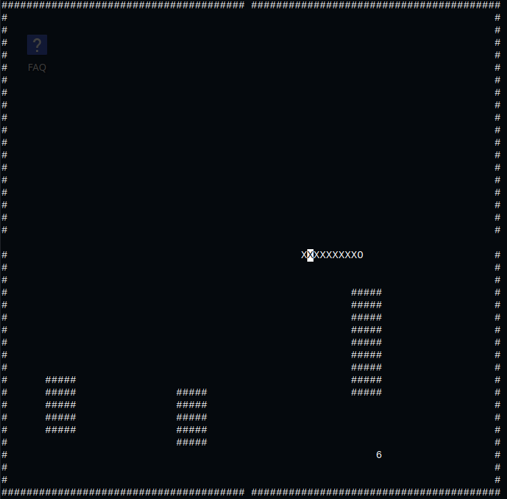
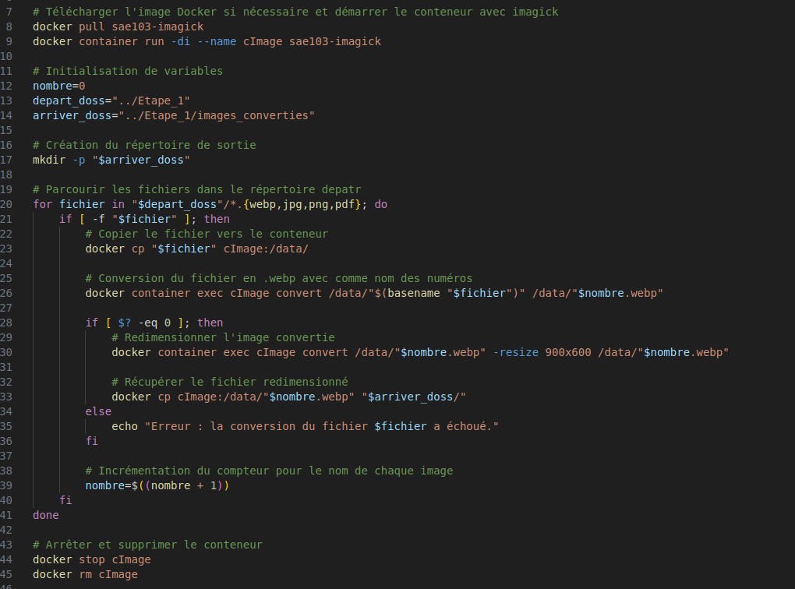
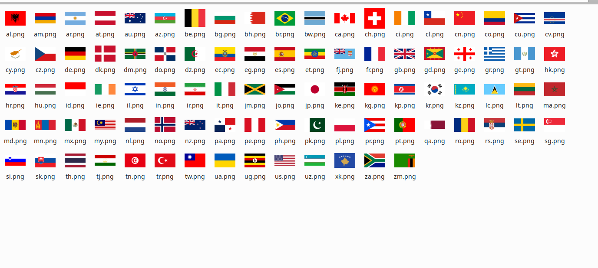
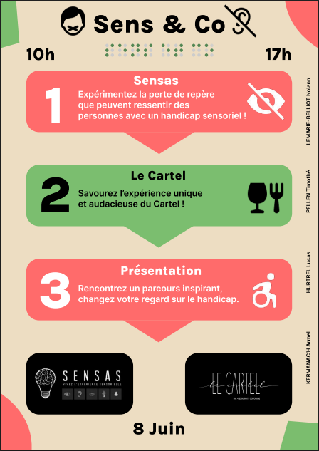

Mes projets
En entreprise – Stage développeur web & logiciel
Sofop Taliaplast – Montoir-de-Bretagne · avril – juillet 2026 (12 semaines)
Développement et optimisation d'outils internes : centralisation des processus métiers et génération documentaire dynamique.
Sofop Taliaplast est un fabricant français d'outillage professionnel, de signalisation et d'EPI (240 collaborateurs, 7 sites de production, export dans 60 pays). Intégré au siège, au sein du service commercial, j'ai constaté que la recherche d'informations sur le catalogue était laborieuse et que les outils métiers étaient dispersés. Ma mission : centraliser, fluidifier et automatiser l'accès aux données du catalogue et aux outils de l'entreprise.
Réalisation 1 – Le tableau de bord (TAB)
- point d'entrée unique vers tous les outils métier (PIM, Doc Mark, traduction…) ;
- favoris et thèmes personnalisables (clair, sombre, néon…) ;
- glisser-déposer des rubriques avec SortableJS ;
- configuration sauvegardée dans le navigateur (localStorage).
Réalisation 2 – OBbase, le moteur du catalogue
- recherche multicritère asynchrone (AJAX) ;
- filtres par famille, origine, catégorie et type de document (fiches, notices, FDS…) ;
- requêtes SQL à jointures multiples entre articles, produits et annexes ;
- exports CSV multilingues (FR, EN, ES) et archives ZIP de QR codes générés via une API.
Défi technique – La performance
Le chargement simultané des vignettes PDF déclenchait des blocages IP chez l'hébergeur. Solution : chargement différé (IntersectionObserver), file d'attente JavaScript qui limite les requêtes en parallèle et cache PHP avec durée de vie (TTL) et vérification HTTP HEAD.
Défi technique – La génération documentaire
Automatisation des déclarations UE de conformité en PDF avec TCPDF : documents multilingues (FR, EN, ES) grâce à un dictionnaire d'internationalisation, données injectées depuis la base et respect d'une charte graphique stricte.
Bilan
J'ai présenté l'outil aux services commercial et marketing, achats, export et qualité. Il a été très bien accueilli (« pratique », « facile ») et son développement est poursuivi par mon tuteur. Ce stage m'a fait monter en compétences en back-end et en conception d'interfaces dynamiques, en autonomie et avec une vraie force de proposition.
PHPMySQLJavaScript (AJAX)SortableJSTCPDFHTMLCSS / SCSS
Lire le retour de l'entrepriseProjet de groupe – Alizon, marketplace en ligne
SAE 3 & 4 – BUT Informatique, 2e année (2025 – 2026)
En équipe de 7 étudiants, nous avons conçu et développé Alizon, une marketplace complète qui met en relation des vendeurs et des clients. Le projet a été mené par sprints (méthode agile), avec une soutenance à chaque fin de sprint.
Côté client (front-office)
- catalogue avec filtres, tri et recherche ;
- produits sponsorisés, remises et promotions ;
- fiche produit, panier et paiement ;
- suivi de commande étape par étape ;
- avis clients (votes, signalement) et facture PDF.
Côté vendeur (back-office)
- création et modification de produits ;
- gestion des remises et promotions ;
- réponse aux avis et signalement ;
- suivi des commandes et bordereaux d'expédition ;
- factures PDF et statistiques de ventes.
Sécurité et services
- double authentification (A2F / TOTP) pour les clients et les vendeurs ;
- mots de passe hachés ;
- Delivraptor : simulateur de transporteur écrit en C (serveur TCP + PostgreSQL) que le site interroge pour faire avancer les colis.
PHPPostgreSQLHTMLSCSSJavaScriptC (sockets)Chart.jsFPDFGit / GitHubFigma


Projets de BUT Informatique, par UE
Projets réalisés à l'IUT de Lannion (2024 – 2026).
UE1 – Développement d'application
Snake
J'ai réalisé un snake. Si vous connaissez le jeu snake, c'est un jeu qui nécessite de récupérer des pommes en déplaçant un serpent, tout en esquivant les obstacles ! Nous avons utilisé pour ce projet le langage de programmation « C ».

UE2 – Optimisation d'applications
Snake autonome
J'ai réalisé un snake autonome. Si vous connaissez le jeu snake, c'est un jeu qui nécessite de récupérer des pommes en déplaçant un serpent. Ici, en l'occurrence, vous n'avez pas besoin de déplacer le snake car il est autonome ! Nous avons utilisé pour ce projet le langage de programmation « C ».

UE3 – Systèmes communicants
Installation d'un poste pour le développement
Nous avons réalisé des scripts pour transformer des images en différents formats, tout en modifiant leurs tailles. Nous avons aussi modifié des tableaux de format. Nous avons utilisé du PHP ainsi que du Bash pour ce projet.
Voici un exemple des scripts que nous avons dû réaliser :

Ce script transformait ces drapeaux :

UE4 – Données et information
Création d'une base de données
Nous avons réalisé pour ce projet une base de données pour une université qui voulait créer un système pour sélectionner ses élèves. Voici le fichier de consignes. Nous avons utilisé le langage SQL.

UE5 – Conduite de projet
Création d'un site
Nous avons créé un site pour les JO. Nous avions une discipline à choisir et nous avons choisi le saut à la perche. J'ai fait la page « saut_perche ». Nous avons utilisé du HTML et du CSS pour ce projet.

UE6 – Travail en équipe
Organisation d'un team building
Nous avons organisé un team building pour l'entreprise Lunaweb en nous faisant passer pour les RH. Les salariés de l'entreprise vont d'abord à une activité nommée « Sensas », où ils évoluent dans un environnement qui les prive de certains de leurs sens, puis ils vont manger au restaurant « Le Cartel », pour ensuite aller à la rencontre d'un pratiquant de handisport qui leur raconte son quotidien. Cette journée a pour but de montrer aux salariés de cette entreprise, qui crée des sites web, ce que l'on vit lorsque l'on a un handicap, pour qu'ils puissent rendre leurs sites accessibles aux personnes en situation de handicap.
Voici l'infographie :
